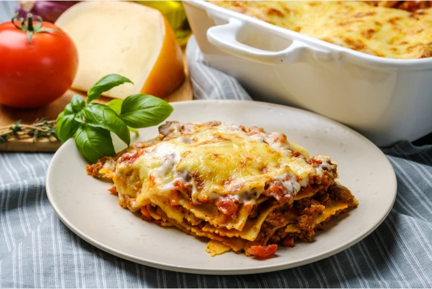

Lasagne alla Bolognese, mit ihrer jahrhundertealten Herkunft im Herzen von Bologna (Emilia-Romagna), ist mein absolutes Wohlfühlgericht, das mit jeder Schicht aus zartem Ragù, cremiger Béchamel und ganz viel Amore pure italienische Gemütlichkeit auf den Teller zaubert. ✨
| Zutaten: | Zubereitung: | |
|---|---|---|
| 1 Schuss | Olivenöl (für die Form) |
Schritt 1:
Zuerst die Bolognesesauce zubereiten: Dafür Zwiebeln und Knoblauch schälen und fein hacken. Die Karotten schälen und raspeln. Schritt 2:
Etwas Öl in einer Pfanne erhitzen und das Rinderfaschiertes darin krümelig anbraten. Zwiebeln, Knoblauch und Karotten dazugeben und kurz mitdünsten. Schritt 3:
Tomatenmark, geschälte Tomaten und Tomatensauce unterrühren. Mit Salz, Pfeffer, Basilikum, Oregano und Thymian würzen und leicht köcheln lassen. Schritt 4:
Für die Bechamelsauce die Butter in einem Topf schmelzen, das Weizenmehl einrühren und kurz anschwitzen. Nach und nach mit Milch ablöschen und aufkochen lassen. Schritt 5:
Die Bechamelsauce mit Salz, weißem Pfeffer und geriebenem Muskat kräftig abschmecken. Schritt 6:
Eine Auflaufform mit Olivenöl einfetten. Abwechselnd Lasagneblätter, Bolognesesauce, Bechamelsauce und Gouda einschichten, bis alles aufgebraucht ist. Schritt 7:
Im vorgeheizten Backofen bei ca. 180 °C Ober-/Unterhitze für ca. 35 bis 40 Minuten goldbraun backen. Vor dem Anschneiden kurz ruhen lassen. |
| 12 Stk | Lasagneblätter | |
| 200 g | Gouda (gerieben, zum Bestreuen) | |
| Für die Bechamelsauce: | ||
| 80 g | Butter | |
| 80 g | Weizenmehl (glatt, W480) | |
| 700 ml | Milch | |
| 1 Prise | Pfeffer (weiß, frisch gemahlen) | |
| 1 Prise | Salz | |
| 1 Prise | Muskat (gerieben) | |
| Für die Bolognesesauce: | ||
| 1 Stk | Zwiebel (mittelgroß) | |
| 1 Stk | Knoblauchzehe | |
| 1 Stk | Karotte | |
| 1 Schuss | Öl (für die Pfanne) | |
| 500 g | Rinderfaschiertes | |
| 1 Dose | Tomaten (geschält) | |
| 5 EL | Tomatenmark | |
| 3 EL | Tomatensauce | |
| 1 Prise | Basilikum (getrocknet) | |
| 1 Prise | Oregano (getrocknet) | |
| 1 Prise | Thymian (getrocknet) | |
| 1 Prise | Salz | |
| 1 Prise | Pfeffer (schwarz, frisch gemahlen) | |